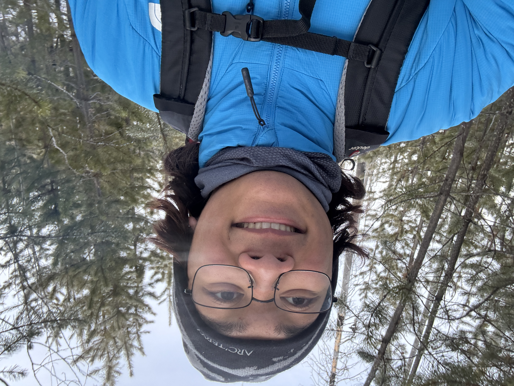
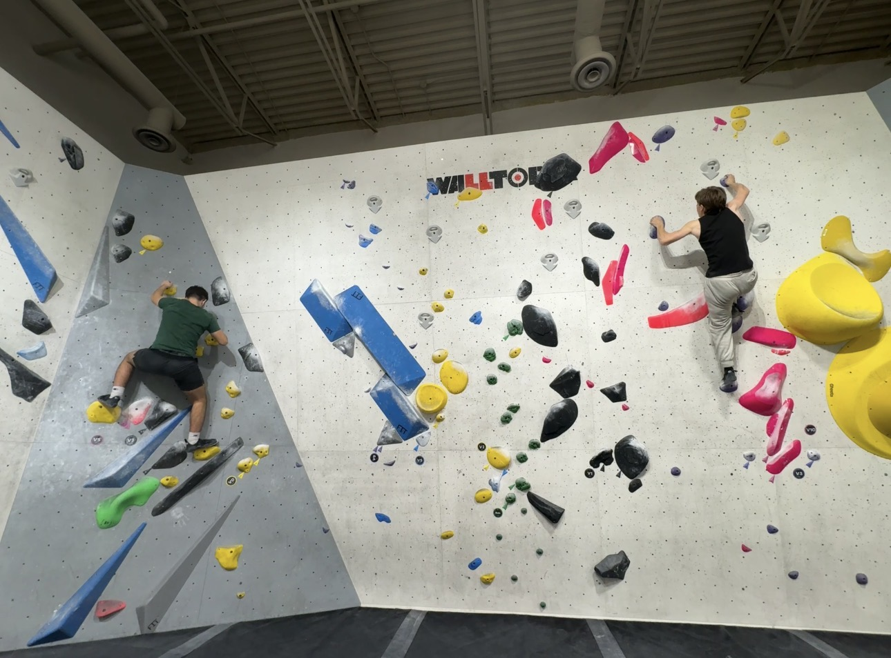

Who Is Lorenzo?
Lorenzo is a first year MRU Computer Information Systems student. He has many hobbys such as drawing, travelling, hiking, gaming, sewing, reading, baking, and most notably climbing. He is highly passionate about all of these interests of his, and aims to become good and maybe even great at all of these. He loves adventures, and this is particularly shown through his hobbies.
Climbing
Lorenzo got into climbing at a very young age, climbing evergreen trees with his friends on the regular. A few years later, his parents took him to a rock climbing wall and he absolutely fell in love with the idea. To be able to climb anytime, solo, was an amazing thing. He later got into outdoor climbing, belaying, and most recently bouldering later on in his life. Now you can find him doing different routes on the MRU climbing wall from time to time, feel free to pop in and say hi!
